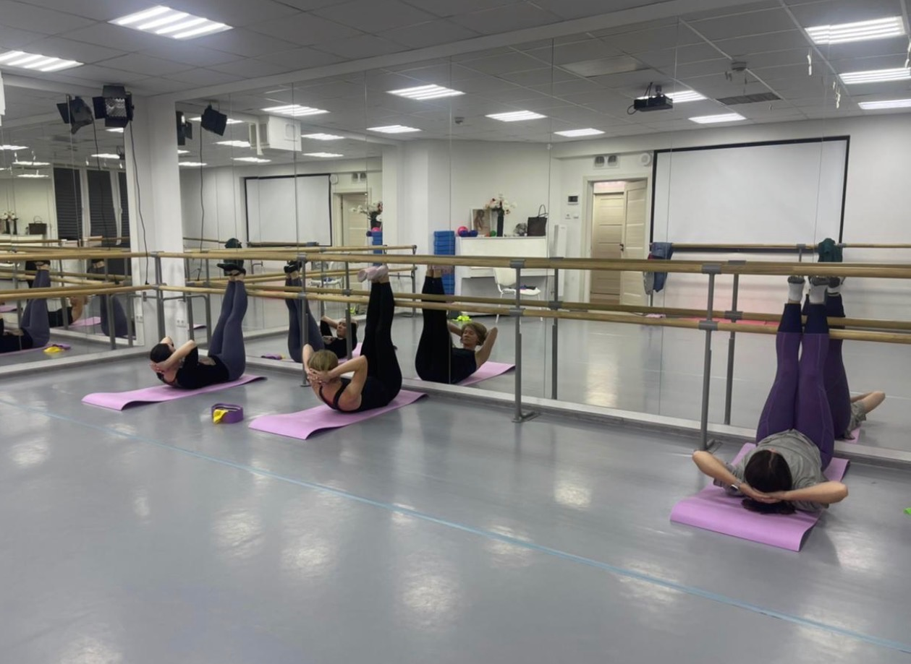

Направления · 18–55 лет
Body Ballet — балет для взрослых 18–55 лет
Балетная эстетика, пластика и движение — независимо от предыдущей подготовки.
Body Ballet — направление «Эльфа» для взрослых, которые хотят познакомиться с балетной культурой движения и уделить внимание осанке, пластике и координации. Занятия рассчитаны на людей с разным уровнем подготовки, поэтому начать можно и без предыдущего танцевального опыта.
- Возраст: 18–55 лет
- Продолжительность занятия: 60 минут
- Пробные занятия бесплатно
Балет для взрослых без требований к подготовке
Чтобы начать заниматься Body Ballet, не требуется предыдущий опыт в балете или хореографии.
Направление рассчитано на взрослых с разным уровнем подготовки — в том числе на тех, кто впервые знакомится с балетным движением.
Главное на первых занятиях — постепенно познакомиться с новым для себя форматом и научиться лучше чувствовать и контролировать собственное движение.
Осанка, пластика и координация
В Body Ballet внимание уделяется осанке, пластике, координации и гармоничной работе с телом.
Занятия помогают постепенно развивать культуру движения и лучше понимать, как положение корпуса, рук и общее качество движения соединяются между собой.
Здесь важен не профессиональный балетный результат, а сама работа с движением и возможность заниматься в комфортном для взрослого формате.
Как проходят занятия
Одно занятие длится 60 минут.
Формат Body Ballet рассчитан на взрослых с разным уровнем подготовки и позволяет последовательно знакомиться с балетной культурой движения.
Предварительно осваивать специальные упражнения или иметь танцевальный опыт не требуется.
Чем Body Ballet отличается от классического танца
В «Эльфе» классический танец и Body Ballet — два разных направления.
Классический танец рассчитан на детей и подростков 8–18 лет и связан с последовательным освоением балетной техники и сценической практикой.
Body Ballet создан для взрослых 18–55 лет. Здесь основное внимание уделяется осанке, пластике, координации и работе с движением, а предыдущая балетная подготовка не является обязательной.
Подробнее о классическом танце →Можно ли начать Body Ballet без опыта
Да.
Для первого знакомства с Body Ballet не нужно раньше заниматься балетом или танцами.
На пробном занятии можно познакомиться с педагогом и форматом направления и понять, насколько такой вид движения подходит именно вам.
Если опыт танцев или хореографии уже есть, это также не является препятствием для занятий.
Body Ballet для взрослых 18–55 лет
Направление рассчитано на взрослых от 18 до 55 лет.
Возраст и предыдущий танцевальный опыт не определяют необходимость профессиональной подготовки: Body Ballet в «Эльфе» можно начать осваивать без предварительного обучения классическому танцу.
Это возможность познакомиться с балетной эстетикой движения в формате, созданном именно для взрослых.
Балетное движение без профессиональных требований
Для занятий Body Ballet не нужно ставить перед собой цель профессионально заниматься балетом.
Направление позволяет работать с движением, пластикой и координацией и при этом оставаться частью атмосферы Детского театра балета «Эльф».
Каждый взрослый может начать с собственного уровня подготовки и постепенно знакомиться с направлением.
Пробное занятие
Пробное занятие Body Ballet
Пробное занятие позволяет познакомиться с педагогом, форматом Body Ballet и понять, подходит ли вам это направление.
Предварительная танцевальная подготовка не требуется.
Пробные занятия в «Эльфе» бесплатны.
Москва
Body Ballet и балет для взрослых у метро Проспект Вернадского
ул. Удальцова, 17 к. 1метро Проспект Вернадского
Чтобы узнать о группе и договориться о пробном занятии, позвоните нам:
+7 905 513-53-11 Позвонить и записатьсяНаправления
Другие направления «Эльфа»
Помимо Body Ballet для взрослых, в «Эльфе» занимаются дети и подростки — от первых шагов в хореографии до классического танца и театральной студии.